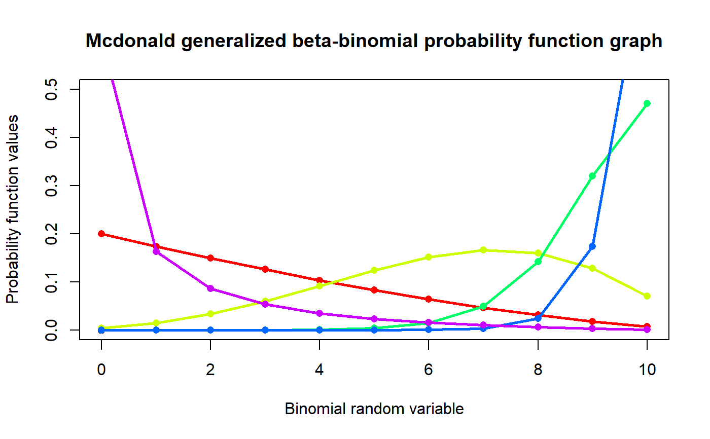
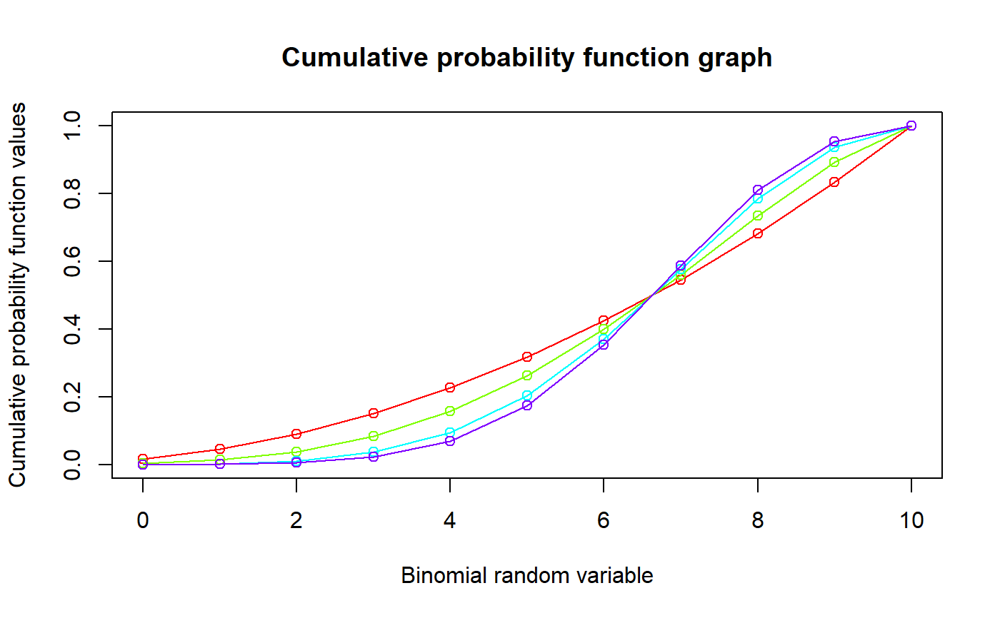

These functions provide the ability for generating probability function values and cumulative probability function values for the McDonald Generalized Beta Binomial Distribution.
dMcGBB(x,n,a,b,c)
| x | vector of binomial random variables. |
|---|---|
| n | single value for no of binomial trials. |
| a | single value for shape parameter alpha representing as a. |
| b | single value for shape parameter beta representing as b. |
| c | single value for shape parameter gamma representing as c. |
The output of dMcGBB gives a list format consisting
pdf probability function values in vector form.
mean mean of McDonald Generalized Beta Binomial Distribution.
var variance of McDonald Generalized Beta Binomial Distribution.
over.dis.para over dispersion value of McDonald Generalized Beta Binomial Distribution.
Mixing Generalized Beta Type-1 Distribution with Binomial distribution the probability function value and cumulative probability function can be constructed and are denoted below.
The cumulative probability function is the summation of probability function values.
$$P_{McGBB}(x)= {n \choose x} \frac{1}{B(a,b)} (\sum_{j=0}^{n-x} (-1)^j {n-x \choose j} B(\frac{x}{c}+a+\frac{j}{c},b) ) $$ $$a,b,c > 0$$
The mean, variance and over dispersion are denoted as $$E_{McGBB}[x]= n\frac{B(a+b,\frac{1}{c})}{B(a,\frac{1}{c})} $$ $$Var_{McGBB}[x]= n^2(\frac{B(a+b,\frac{2}{c})}{B(a,\frac{2}{c})}-(\frac{B(a+b,\frac{1}{c})}{B(a,\frac{1}{c})})^2) +n(\frac{B(a+b,\frac{1}{c})}{B(a,\frac{1}{c})}-\frac{B(a+b,\frac{2}{c})}{B(a,\frac{2}{c})}) $$ $$over dispersion= \frac{\frac{B(a+b,\frac{2}{c})}{B(a,\frac{2}{c})}-(\frac{B(a+b,\frac{1}{c})}{B(a,\frac{1}{c})})^2}{\frac{B(a+b,\frac{1}{c})}{B(a,\frac{1}{c})}-(\frac{B(a+b,\frac{1}{c})}{B(a,\frac{1}{c})})^2}$$ $$x = 0,1,2,...n$$ $$n = 1,2,3,...$$
Manoj, C., Wijekoon, P. & Yapa, R.D., 2013. The McDonald Generalized Beta-Binomial Distribution: A New Binomial Mixture Distribution and Simulation Based Comparison with Its Nested Distributions in Handling Overdispersion. International Journal of Statistics and Probability, 2(2), pp.24-41.
Available at: http://www.ccsenet.org/journal/index.php/ijsp/article/view/23491.
Janiffer, N.M., Islam, A. & Luke, O., 2014. Estimating Equations for Estimation of Mcdonald Generalized Beta - Binomial Parameters. , (October), pp.702-709.
Roozegar, R., Tahmasebi, S. & Jafari, A.A., 2015. The McDonald Gompertz Distribution: Properties and Applications. Communications in Statistics - Simulation and Computation, (May), pp.0-0.
Available at: http://www.tandfonline.com/doi/full/10.1080/03610918.2015.1088024.
#plotting the random variables and probability values col<-rainbow(5) a<-c(1,2,5,10,0.6) plot(0,0,main="Mcdonald generalized beta-binomial probability function graph", xlab="Binomial random variable",ylab="Probability function values",xlim = c(0,10),ylim = c(0,0.5))for (i in 1:5) { lines(0:10,dMcGBB(0:10,10,a[i],2.5,a[i])$pdf,col = col[i],lwd=2.85) points(0:10,dMcGBB(0:10,10,a[i],2.5,a[i])$pdf,col = col[i],pch=16) }dMcGBB(0:10,10,4,2,1)$pdf #extracting the pdf values#> [1] 0.003663004 0.013320013 0.029970030 0.053280053 0.081585082 0.111888112 #> [7] 0.139860140 0.159840160 0.164835165 0.146520147 0.095238095dMcGBB(0:10,10,4,2,1)$mean #extracting the mean#> [1] 6.666667dMcGBB(0:10,10,4,2,1)$var #extracting the variance#> [1] 3.174603dMcGBB(0:10,10,4,2,1)$over.dis.para #extracting the over dispersion value#> [1] 0.1428571#plotting the random variables and cumulative probability values col<-rainbow(4) a<-c(1,2,5,10) plot(0,0,main="Cumulative probability function graph",xlab="Binomial random variable", ylab="Cumulative probability function values",xlim = c(0,10),ylim = c(0,1))for (i in 1:4) { lines(0:10,pMcGBB(0:10,10,a[i],a[i],2),col = col[i]) points(0:10,pMcGBB(0:10,10,a[i],a[i],2),col = col[i]) }#> [1] 0.003663004 0.016983017 0.046953047 0.100233100 0.181818182 0.293706294 #> [7] 0.433566434 0.593406593 0.758241758 0.904761905 1.000000000